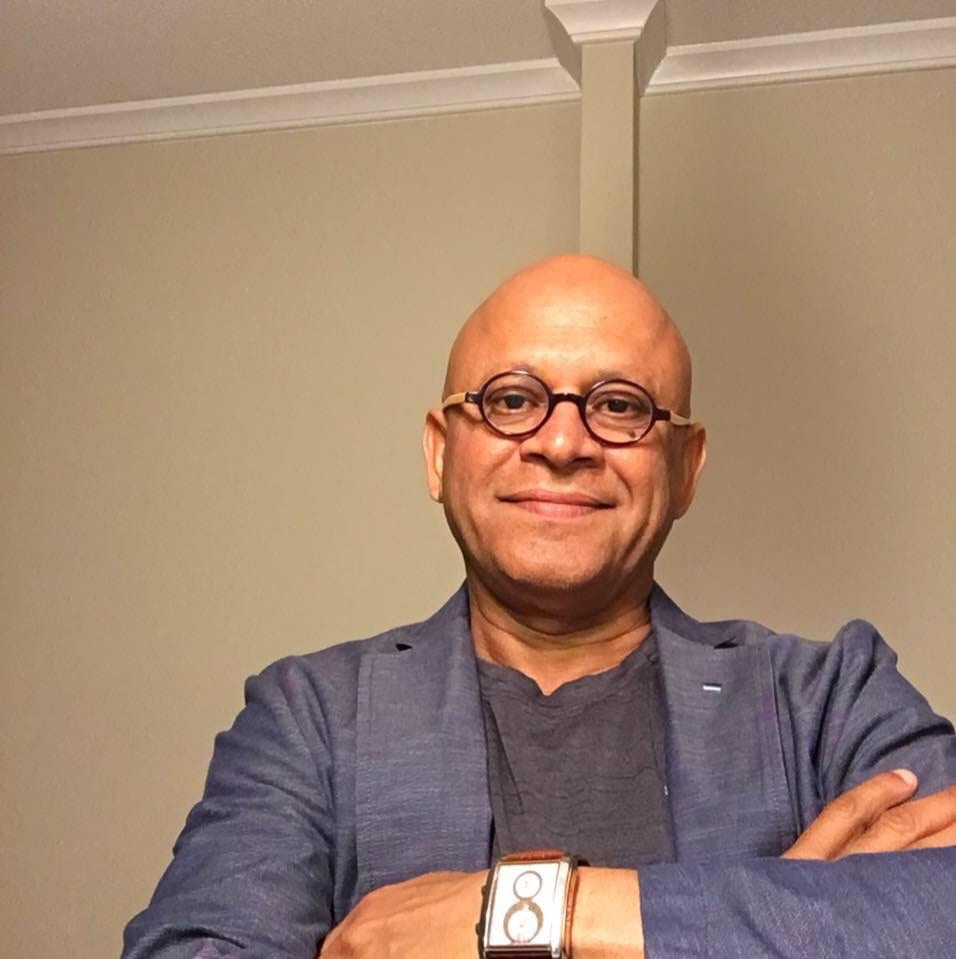

University of Maryland
Amir Sapkota, PhD
Dr. Sapkota is a professor in the Maryland Institute for Applied Environmental Health. He is the consortium PI for the AWARD-APR project and the Maryland Climate Change Health Adaptation Program. Dr. Sapkota’s research focuses on the health impacts of climate change and the cardiopulmonary health effects of combustion-related air pollutants.Xin-Zhong Liang, PhD
Dr. Liang is a professor in the Department of Atmospheric and Oceanic Sciences. He developed China’s first and second generations of the Global General Circulation Models (GCMs) as well as Regional Climate Models (CMM5, CWRF). Dr. Liang also leads the University of Maryland’s Earth System Modeling group.